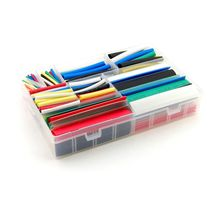

Набор термоусадочных трубок, разный размер и цвет
ПроводаНабор термоусадочных трубок для изоляции, маркировки и защиты проводов и соединений. Подходит, когда нужны разные диаметры и цвета в одном комплекте.
Это набор гибких термоусадочных трубок, которые уменьшаются в диаметре при нагреве и плотно облегают провод или соединение. Такие наборы используют для электрической изоляции, разгрузки от натяжения, жгутования проводов и цветовой маркировки. По найденным официальным данным наиболее близкое каноническое семейство — 3M FP-301: это тонкостенные трубки из полиолефина с коэффициентом усадки 2:1. В ассортиментной версии доступны разные цвета и типоразмеры, чтобы подбирать трубку под конкретный провод или разъём. Для публичного каталога корректно описывать это как универсальный набор термоусадочных трубок без привязки к одному уникальному артикулу, если точный комплект не указан.